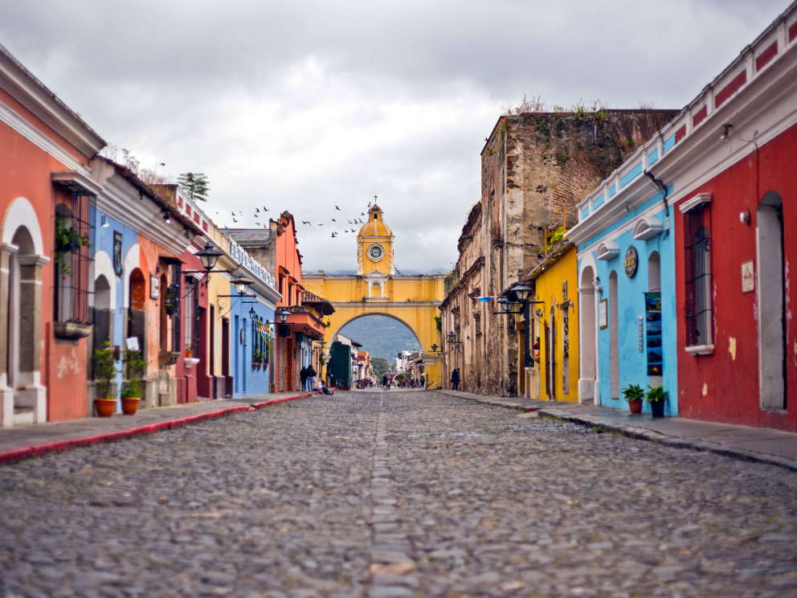
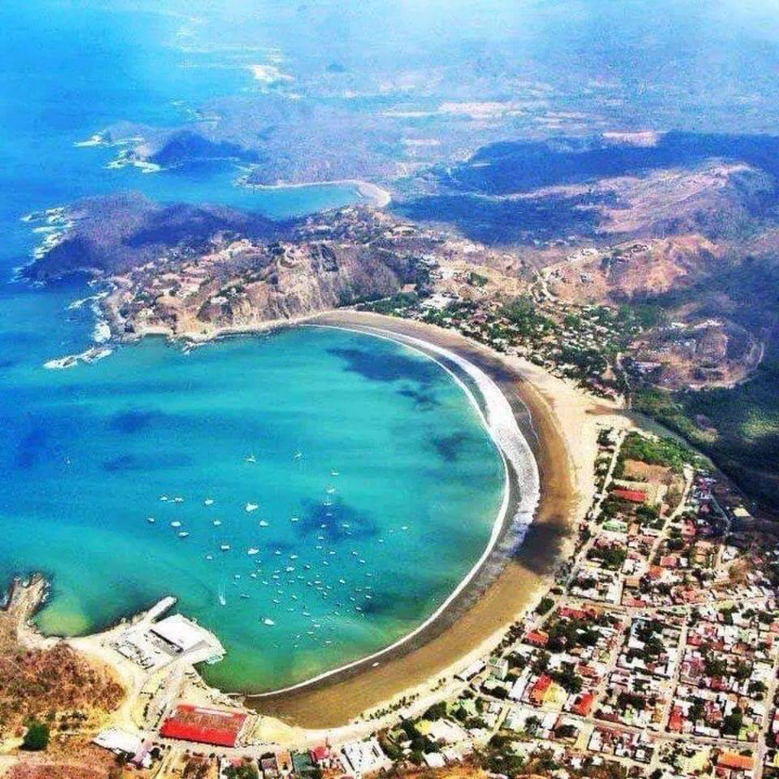
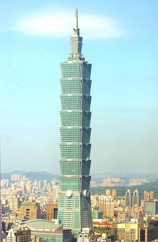

Fecha: 11/03/2018
Lugar: Taipei, Taiwan

El Taipei 101 es un edificio ubicado en Taipéi (Taiwán) que cuenta con 106 plantas (101 por encima del nivel del suelo y 5 subterráneas). La aguja que corona sus 508 metros de altura, lo convierte en el octavo rascacielos más alto del mundo, después del Chow Tai Fook Centre, el One World Trade Center, el Goldin Finance 117, el Ping An Finance Center, las Torres Abraj Al Bait, la Torre de Shanghái y el Burj Khalifa. También es el rascacielos ecológico más alto del mundo.
Se inició su construcción en 1999 y se terminó aproximadamente en 5 años. Según sus técnicos, puede soportar terremotos de hasta 7 grados en la escala de Richter y vientos de más de 450 km/h. La importante capacidad de absorción de movimiento de masas en esta estructura, reside en un amortiguador de masa formado por una gran bola dorada de acero de 680 toneladas de peso compuesta de planchas metálicas en la planta 92 suspendida con tensores desde su parte alta y sujeta en su base con bombas hidráulicas, siendo el más grande y pesado del mundo. Cuando el edificio se mueve en una dirección el amortiguador lo impulsa en dirección contraria, absorbiendo la energía de movimiento, sirviendo de contrapeso mecánico de las vibraciones, limitándolas y estabilizando el edificio. Está dividido en 8 segmentos de 8 plantas, y es el único amortiguador que está a la vista del público.
Fecha: 19/02/2018
Lugar: Antigua, Guatemala

La ciudad de Santiago de los Caballeros de Guatemala, cuyo nombre oficial e histórico es Muy Noble y Muy Leal Ciudad de Santiago de los Caballeros de Guatemala y popularmente nombrada en la actualidad como Antigua Guatemala, es cabecera del municipio homónimo y del departamento de Sacatepéquez, Guatemala; se ubica a aproximadamente 45 kilómetros al oeste de la capital de la República de Guatemala, y a una altitud de 1470 msnm.
Durante la época de la colonia era conocida como «Santiago de los Caballeros de Guatemala», y fue la capital de la Capitanía General de Guatemala, entre 1541 y 1776, año en que la capital fue trasladada a la ciudad de Nueva Guatemala de la Asunción luego que los terremotos de Santa Marta arruinaran la ciudad por tercera ocasión en el mismo siglo y las autoridades civiles utilizaran eso como excusa para debilitar a las autoridades eclesiásticas —siguiendo las recomendaciones de las Reformas Borbónicas emprendidas por la corona española en la segunda mitad del siglo xviii— obligando a las órdenes regulares a trasladarse de sus majestuosos conventos a frágiles estructuras temporales en la nueva ciudad.